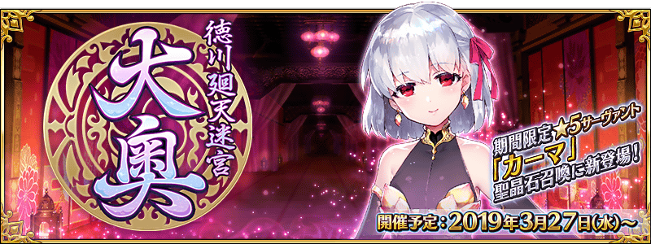
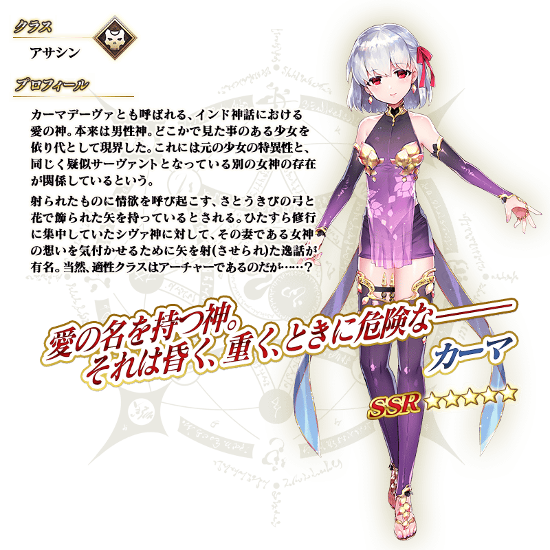
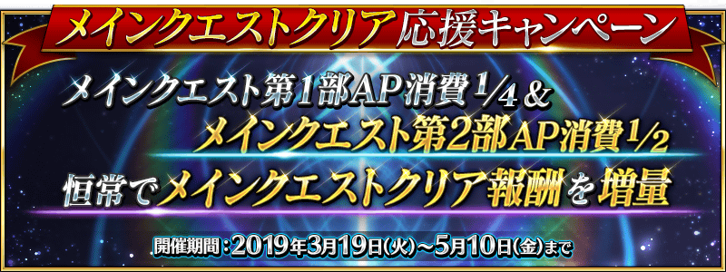

【3月24日(日) 13:00追記】
◆活動舉辦時間◆
2019年3月27日(三) 17:00～(預定)
◆活動概要◆
預定舉辦期間限定活動「徳川廻天迷宮 大奥」！
為了應對從外部原因不明的攻擊，Master趕緊靈子轉移到做為該原因的特異點。
在化作巨大地下迷宮的江戸城・大奥舞台，以被謎團壟罩的最下層為目標開始探索。
另外，本活動中1位新Servant登場！
新期間限定Servant「★5(SSR)伽摩」在同時預定舉辦的期間限定「徳川廻天迷宮 大奥Pick Up召喚」Pick Up。
◆活動參加條件◆
滿足以下條件的Master才能參加
・通過第2部 第3章「Lostbelt No.3 人智統合真國 SIN 紅之月下美人」
※不需要通過亞種特異點(從Ⅰ到Ⅳ)。
◆有關Servant真名的注意◆
在2018年12月31日(二) 23:00以後新配信的主線故事及期間限定活動、一部份關卡、宣傳活動及召喚中，會顯示隱藏真名的對象Servant真名。
※已經配信的主線故事、復刻活動、一部份關卡中不在此限。

在「Fate/Grand Order」官方網站內首頁及Gallery，公開了期間限定活動「徳川廻天迷宮 大奥」的TVCM。敬請確認。
動畫製作：A-1 Pictures
與本活動的開始同時地，在聖晶石召喚舉辦期間限定Pick Up召喚！
介紹做為新登場期間限定Servant的「★5(SSR)伽摩」！

本活動的期間中，活動加成對象Servant在活動關卡中會得到「自身的攻擊威力提升」加成。
另外一部份的Servant也會得到「絆點數獲得量提升」加成！
強化對象Servant，挑戰活動吧！
※活動加成的效果量因Servant而異。 ※自3月24日(日) 16:00，在Servant選擇畫面和Servant強化畫面等，追加活動加成篩選器。由於是只顯示於活動活躍Servant的便利功能，敬請活用。
得到2種活動加成的Servant
下表的Servant在活動關卡中會得到「自身的攻擊威力提升」與「絆點數獲得量提升」的加成。
※「絆點數獲得量提升」的對象因Servant而異。 ※瑪琇・基利艾拉特的「絆點數獲得量提升」效果是所謂「我方全體的絆點數獲得量提升」效果。此效果在支援時變為無效。

【活動加成的對象Servant】
| 職階 | 稀有度 | Servant名 |
|---|---|---|
| Saber | ★★★★ | 柳生但馬守宗矩 |
| Lancer | ★★★★ | 帕爾瓦蒂 |
| Caster | ★★★★★ | 不夜城的Caster(雪赫拉莎德) |
| Assassin | ★★★★★ | 伽摩 |
| ★ | 瑪塔・哈里 | |
| Alterego | ★★★★★ | 殺生院祈荒 |
| Shielder | ★★★ | 瑪琇・基利艾拉特 |
其他的Servant
下表的Servant在活動關卡中會得到「自身的攻擊威力提升」的加成。

【活動加成的對象Servant】
| 職階 | 稀有度 | Servant名 |
|---|---|---|
| Saber | ★★★★★ | 沖田總司 |
| ★★★★★ | 紅閻魔 | |
| ★★★★★ | 宮本武藏 | |
| ★★★★★ | 兩儀式 | |
| ★★★★ | 鈴鹿御前 | |
| Archer | ★★★★ | Archer・地獄(巴御前) |
| ★★★★ | 淺上藤乃 | |
| ★★★★ | 織田信長 | |
| ★★★ | 俵藤太 | |
| Lancer | ★★★ | 寶藏院胤舜 |
| ★★ | 武藏坊弁慶 | |
| Rider | ★★★★ | 坂田金時 |
| ★★★★ | 坂本龍馬 | |
| ★★★ | 牛若丸 | |
| Caster | ★★★★★ | 玉藻前 |
| ★★★★★ | 紫式部 | |
| Assassin | ★★★★★ | 刑部姬 |
| ★★★★★ | 酒吞童子 | |
| ★★★★ | Assassin・樂園(望月千代女) | |
| ★★★★ | 加藤段藏 | |
| ★★★★ | 兩儀式 | |
| ★★★ | 岡田以藏 | |
| ★★★ | 風魔小太郎 | |
| ★ | 佐佐木小次郎 | |
| Berserker | ★★★★★ | 坂田金時 |
| ★★★★★ | 土方歲三 | |
| ★★★★★ | 源賴光 | |
| ★★★★ | 茨木童子 | |
| ★★★★ | 茶茶 | |
| ★★★ | 清姬 | |
| Ruler | ★★★★★ | 天草四郎 |
| Alterego | ★★★★★ | 沖田總司〔Alter〕 |
| ★★★★★ | 志度內 | |
| Foreigner | ★★★★★ | 葛飾北齋 |
※就算成為對象Servant，也會有未在本活動主線劇本登場的情況。

自2019年3月19日(二) 17:00舉辦主線關卡第1部的AP消耗1/4、主線關卡第2部的AP消耗1/2的宣傳活動！
尚未通過至本活動的參加條件第2部 第3章「Lostbelt No.3 人智統合真國 SIN 紅之月下美人」的Master，請務必藉此機會通過！
詳情請在此處的公告確認。
◆舉辦期間◆
2019年3月19日(二) 17:00～3月31日(日)5月10日(五) 11:59
※自由關卡為對象外。
※強化關卡、幕間物語、曜日關卡為對象外。